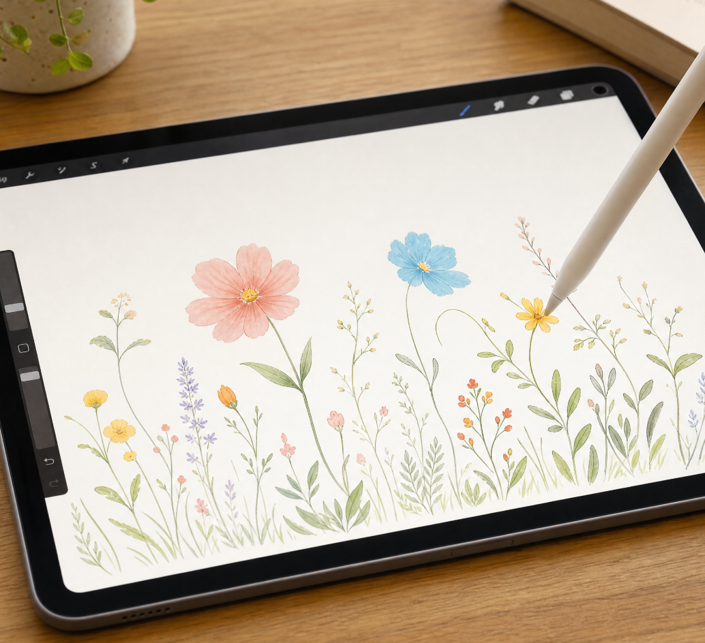
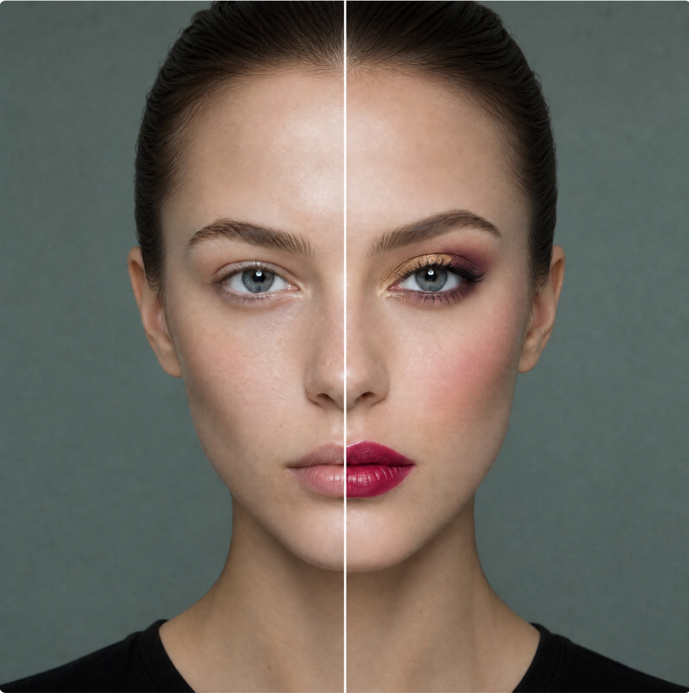
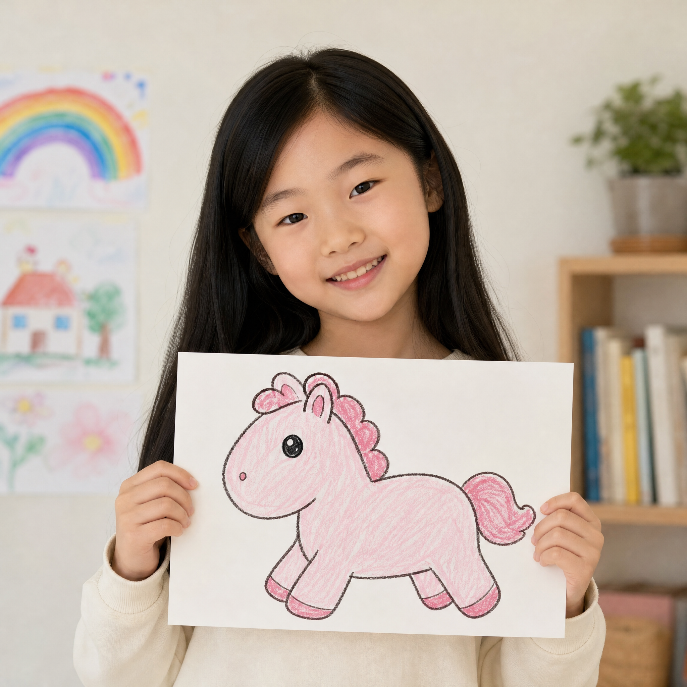
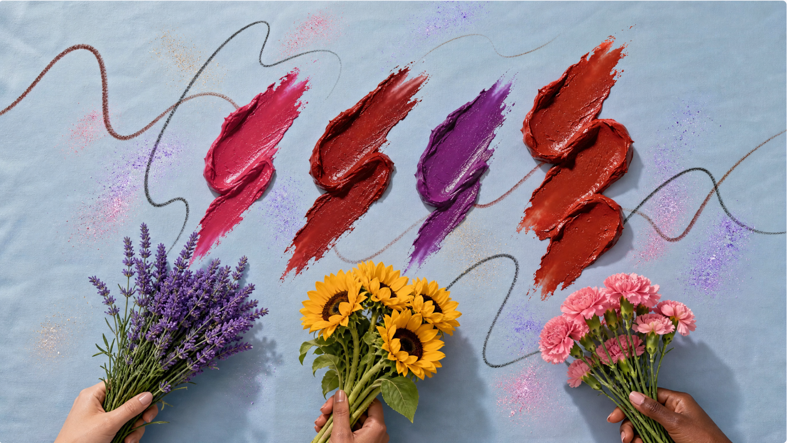

用创作与善意，把美送到病房
还没有账号？ 立即登记

选择色号自由创作，可捐赠或自购定制头巾口罩

情绪智能匹配妆容，体验最新产品

作品历史、评选状态与捐赠记录

了解“戴上春天”的故事与参与方式
① 选色：从欧莱雅产品色号库中挑选“颜料”，色号即颜料，无商品链接强制跳转。
② 创作：在画布上自由作画，可保存草稿；AI 会将作品转为可印花的四方连续纹样。
③ 提交：选择认捐（一键捐赠实物）或自己购买定制产品；作品进入审核。
点击选择，长按查看商品介绍
推荐颜色：
本次使用色号：
请选择作品去向：
所用颜色介绍，戳我了解：
作品提交后进入审核，审核通过将发放优惠券，可在信息栏查看。
选择当前情绪：
用户名：
我被选中了 0 个作品
来自病房的照片与感谢（不展示公益用户信息）